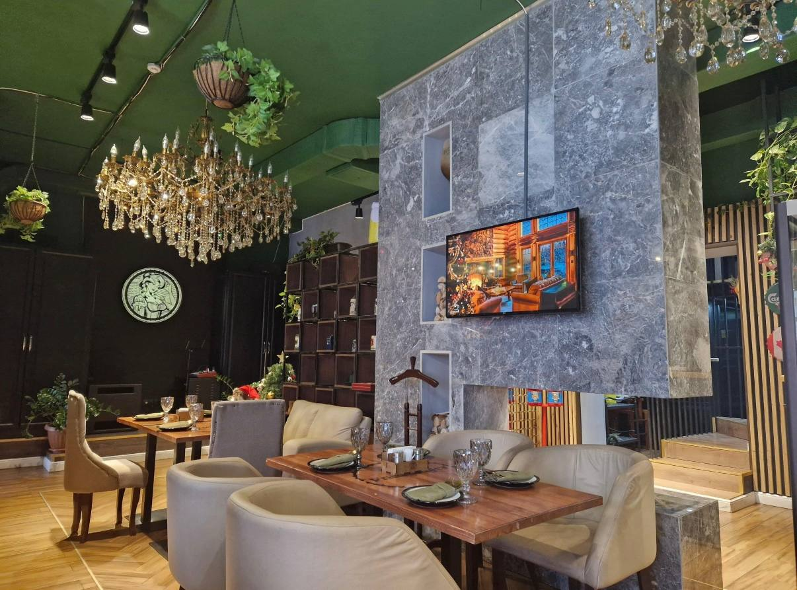

Вкус и традиции
Frau Muller — это место, где встречаются вкусная еда и хорошая компания. Мы специализируемся на немецкой и европейской кухне. Наши шеф-повара готовят сочные стейки, домашние баварские колбаски и настоящую пиццу.


Ваш любимый ресто-паб с настоящей немецкой кухней в Астане.
Frau Muller — это место, где встречаются вкусная еда и хорошая компания. Мы специализируемся на немецкой и европейской кухне. Наши шеф-повара готовят сочные стейки, домашние баварские колбаски и настоящую пиццу.

Обязательно попробуйте Баварские колбаски и наши фирменные бельгийские вафли.